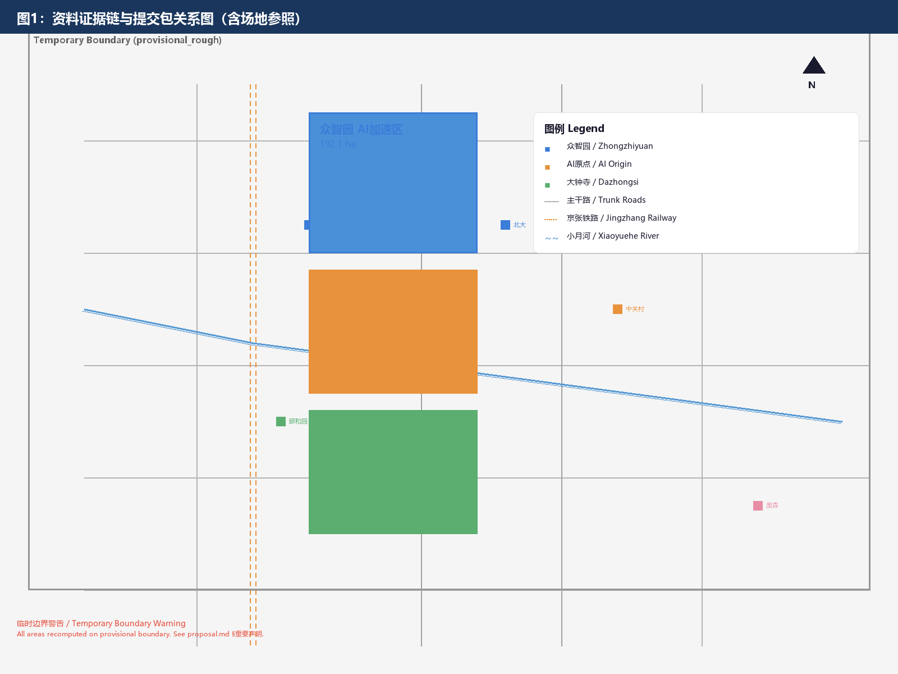
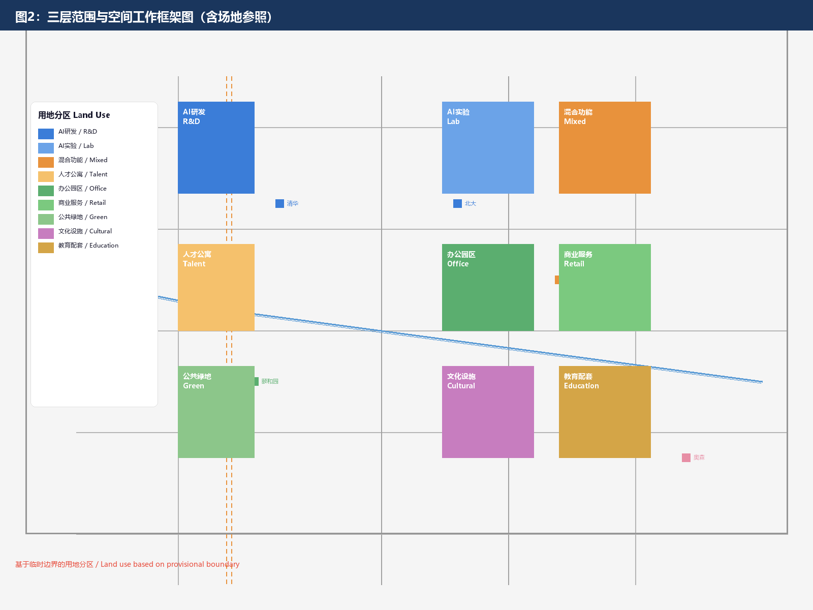
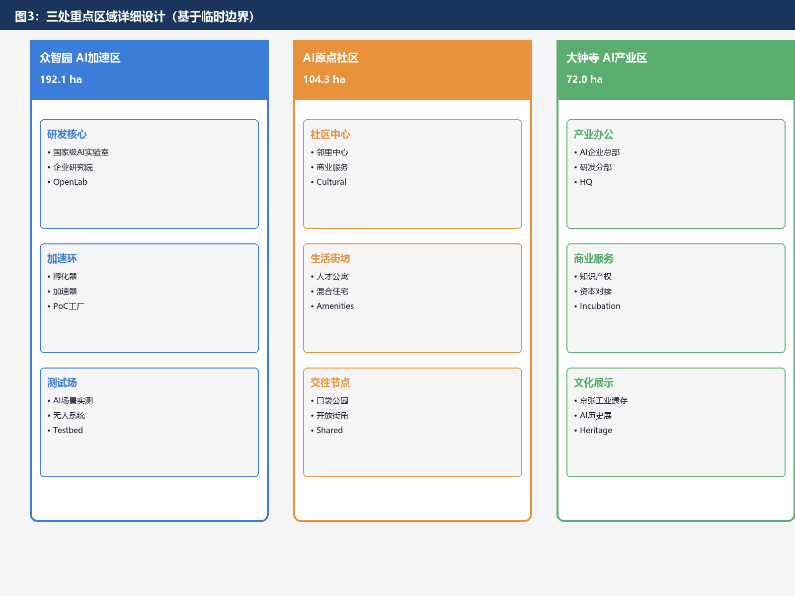
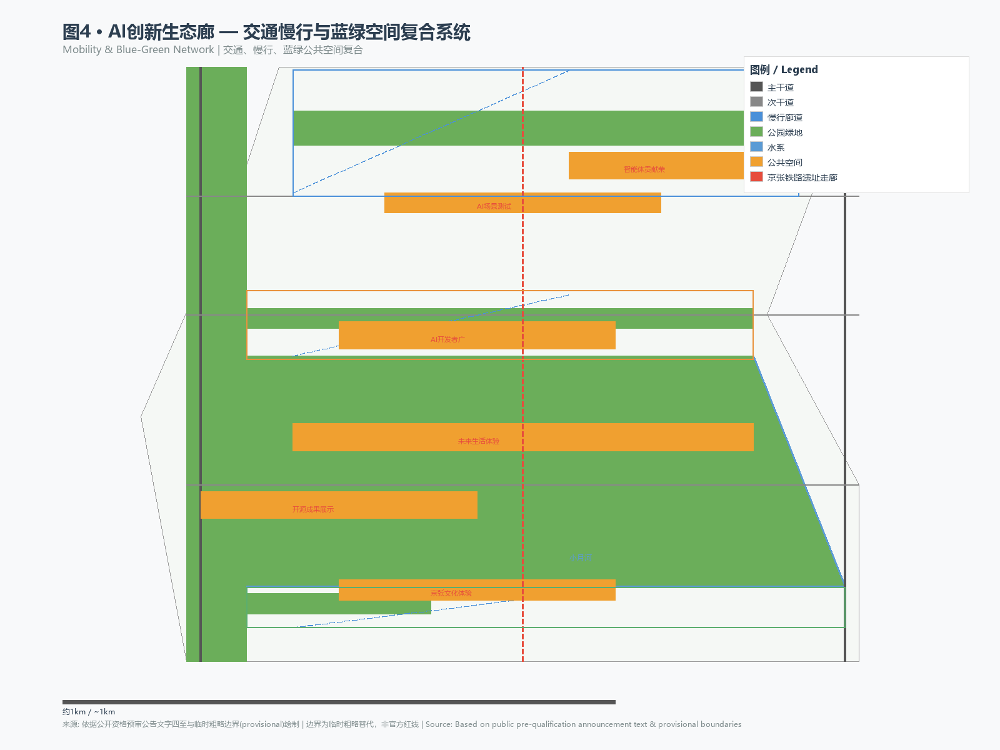
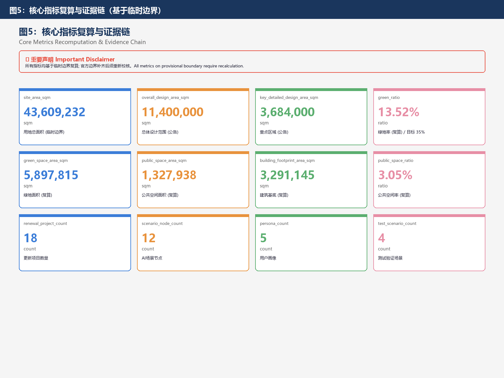

Design Basis & Source Inventory
本方案以Beijing市规划和自然资源CommitteeHaidian分局发布的《Centennial JingzhangAI创新带城市设计国际方案征集资格预审公告》为主控Basis [source:SRC-2026-BJ-GH-QUAL-PREANNOUNCEMENT], 以面向全球AI Agent的Task Book摘录为AI Agent任务CoverageBasis [source:AGENT-TASKBOOK], 以Haidian区"1+X+1"现代化产业体系布局为产业定位背景 [source:SRC-2026-HAIDIAN-1X1], 以Beijing市科委"三区两翼"政策为空间协同框架 [source:SRC-2026-BJ-KW-THREE-AREAS-WINGS].
在Data层面, 本方案使用仓库提供的Temporary粗略边界（provisional boundaries）进行空间生成和展示 [data:geometry/site_boundary.geojson#PROV-SITE-001]. 该边界Basis公告文字四至和约11.4平方公里Area约束推导形成, 属于Temporary粗略替代, 不得作为官方Red Line, ApprovalBasis或精确Area RecalculationBasis [source:SRC-PROVISIONAL-BOUNDARIES-2026]. 当官方精确边界Data可用时, 所有受影响的图层和Metric需要重新计算.
在Standard层面, 本方案遵循《城市设计管理办法》[standard:MOHURD-URBAN-DESIGN-MEASURES], 《城市, 镇Regulatory Detailed Planning编制Approval办法》[standard:MOHURD-CONTROL-DETAILED-PLANNING]和《国土空间调查, 规划, 用途管制Land Use用海分类指南》[standard:MNR-LAND-USE-CLASSIFICATION-GUIDE] 的专业要求. 同时遵循面向AI AgentTask Book的十条共创原则和统一边界条款 [standard:PROJECT-AGENT-OPEN-CALL-TASKBOOK].

Three-Level Scope Working Framework
本方案在三个空间层级上展开工作, 与公告规定的三层范围严格对应 [source:SITE-PACKAGE].
Research Scope（43.6平方公里）: 北至北五环路, 东至京藏高速, 南至西直门外大街, 西至万泉河路 [data:geometry/site_boundary.geojson#PROV-RESEARCH-001]. 在此范围内开展世界级AI创新生态体系研究, Industry Chain Coordination分析, 三区两翼Regional Coordination研究和未来AI城市形态研究. 工作深度为战略研究和产业Coordination.
Design Scope（11.4平方公里）: 以Jingzhang遗址Park周边1-2公里的城市地区和产业区为规划设计范围 [data:geometry/site_boundary.geojson#PROV-SITE-001]. 在此范围内开展Regulatory Detailed Planning深度的城市设计, 包括功能布局, Land Use结构, Urban Renewal Framework, Transportation Organization, Municipal配套, Public Space体系和Urban Form & Character控制. 工作深度为Regulatory Plan城市设计.
Key Areas Scope（3.684平方公里）: 自北向南包括Zhongzhiyuan — AI Independent Innovation Accelerator（192.1公顷）[data:geometry/key_areas.geojson#PROV-KEY-001], Beijing AI Origin Community（104.3公顷）[data:geometry/key_areas.geojson#PROV-KEY-002]和Dazhongsi — AI Industry Cluster（72.0公顷）[data:geometry/key_areas.geojson#PROV-KEY-003]. 在此范围内开展规划综合Implementation方案深度的详细城市设计 [depth:key_area_detail].
关于Temporary Boundary的使用限制: 由于官方精确边界尚未在Public渠道获取, 本方案使用仓库维护者提供的Temporary粗略边界进行空间生成 [source:SRC-PROVISIONAL-BOUNDARIES-2026]. 该边界为Basis公告文字四至和Area约束推导的矩形折线, 精度为"provisional_rough". 在官方精确边界Complete后, 以下内容需要重新计算: 土地利用多边形Area, Building ScaleMetric, Green Space与Public Space比例, Key AreaArea Recalculation以及所有依赖空间边界的定量Metric [metric:overall_design_area_sqm].

Research Scope — Industry & Future Urban Studies
Overall Concept: AI Innovation Ecosystem Corridor
命名体系: 本方案提出"AI创新生态廊"（AI Innovation Ecosystem Corridor, AIEC）作为一带Overall名称. "廊"既回应Jingzhang Railway作为交通走廊的百年历史身份, 又表达AI创新生态作为线性生长系统的空间逻辑——廊道不是封闭的园区, 而是开放的, 可渗透的, 持续生长的创新生态. 英文简称"AIEC"发音接近"AI-Eco", 中英双语均具有辨识度和传播力.
视觉识别与Logo方向: Logo以Jingzhang Railway轨道的平行线为骨架, 融入神经网络节点拓扑结构, 形成"轨道即神经"的视觉隐喻. 主色为科技蓝（#3B7DD8）象征AI创新, 铁路橙（#E8923C）呼应Jingzhang历史, 生态绿（#5BAE6F）代表Sustainable发展. Logo可延展为廊道节点标识系统, Scenario Card视觉模板和Public Space导视体系. 该方向为Conceptual Suggestion, 实际Logo设计需由专业视觉设计团队深化并完成Font和图像清权.
三大定位协同: Centennial Jingzhang文化带定位Pass铁路遗址保护, 詹天佑创新精神传承和Cultural Narrative体系落实; 都市AI生活体验带定位PassAI+Scenario Card, Public Space体验路径和未来生活Block落实; AI融合创新带定位Pass全栈研发, 产业加速和生态服务体系落实 [source:AGENT-TASKBOOK].
五大功能映射: AI全栈自主创新体系以众智园为核心承载; 世界级AI创新生态以三区联动为骨架; AI+Scenario赋能新范式以Xiaoyuehe Scenario Empowerment Wing为试验田; 智能化AI活力城市以Public Space网络和智能原生新业态为表达; AI治理全球话语权以Open-Source共治机制和AI AgentContribution荣誉体系为载体.
三区两翼协同回路: 三区（众智园, AI原点Community, 大钟寺）沿Jingzhang走廊南北串联, 形成"研发-Community-产业"的创新链路 [data:geometry/key_areas.geojson]. 两翼中, Zhongguancun科技服务翼向东延伸提供资本, IP和要素配置服务, Xiaoyuehe Scenario Empowerment Wing向西展开提供AIScenario试验和城市活力注入. 协同回路的关键是: 众智园产出技术→AI原点Community提供人才和生活Scenario→大钟寺实现产业Transformation→Zhongguancun Wing提供资本和IP服务→Xiaoyuehe Wing提供Scenario验证→回流众智园形成闭环.
Global AI Innovation Ecosystem Case Studies
以下是6个全球AI创新生态Case Study, 为创新带的空间和Operation机制设计提供Refer To [source:AGENT-TASKBOOK]:
| Case Study | 位置 | 核心经验 | 空间Transformation启示 |
|---|---|---|---|
| 谷歌山景城园区 | 美国加州 | 开放式园区与城市融合, AI研发与Public Space无界衔接 | 众智园应打破围墙, 与Jingzhang遗址Park无缝衔接 |
| 新加坡One-North | 新加坡 | 科技园区与居住, 商业, 文化混合布局, TOD导向 | AI原点Community应采用混合功能, 以Rail Station为核心组织 |
| 伦敦King's Cross | 英国伦敦 | 铁路遗址再生为Innovation Block, 历史Building与新建AI办公共生 | 大钟寺区域应Retention铁路工业遗存, 与AI新业态叠合 |
| 深圳南山科技园 | 中国深圳 | Industry Chain上下游集聚, 从研发到产业化的完整链条 | 三区应形成从基础研究到产业Transformation的南北链条 |
| 东京涩谷Stream | 日本东京 | 轨道枢纽站城一体化, AIScenario嵌入日常生活 | Rail Station周边应布局AI生活Scenario体验功能 |
| 巴黎Station F | 法国巴黎 | 旧火车站改造为全球最大创业园区, Open InnovationPlatform | Jingzhang Railway遗址Building可改造为AIAccelerator和开放Laboratory |
这些Case Study的共同启示是: 成功的AI创新生态不是孤立的科技园区, 而是与城市深度嵌入, 历史文脉延续, Public Space开放, Industry Chain完整的城市区域. AI创新生态廊的空间设计应遵循这一逻辑.
Boston & NYC Tech Ecosystem Comparative Study
本节基于《科创生态能否后来居上？——以Boston和New York为例》研究, 提炼对JingzhangAI创新带的核心启示 [source:EXTERNAL-REF-BOSTON-NY].
Boston的教训——"要素优先妄想症": Boston拥有哈佛, MIT等顶级学府, 近300名诺奖得主, 深厚产业底蕴, 堪称"要素禀赋最优". 然而2025年New York风投近250亿美元（全球第二）, Boston仅约60亿（不足New York1/4）; 独角兽数量New York141家（第2）, Boston仅20家（第13）. 衰退源于: 制度性障碍（富人税, SaaS销售税）, "海盗文化"（投资人压迫科创者）, "怨恨文化"（社会敌视创新成功者）.
New York的逆袭——科创生态"五件套":
| 策略 | 具体措施 | 对Jingzhang的启示 |
|---|---|---|
| ①应用科学计划 | 康奈尔创新研究院, 亚历山大中心 | 众智园引入顶级AI研究机构 |
| ②生活品质之城 | 咖啡馆, 书店, 博物馆密集布局 | AI原点Community打造15分钟Life-Circle |
| ③Makerspace计划 | Incubator, Co-Working, 创客空间 | 廊道沿线布局多层次孵化空间 |
| ④融资激励计划 | 电费优惠30-35%, 减税退税 | 争取AI企业专项TaxReduction & Exemption |
| ⑤设施更新计划 | 免费WiFi, 混合型公寓, Community改造 | 优先更新Infrastructure, 营造InclusiveCommunity |
截至2025年末, New York硅巷已有8000+初创公司, 36万高科技从业者, 125家独角兽, 总市值超1000亿美元.
核心结论: ①警惕"要素优先妄想症"——不能仅拼大学/Laboratory/Computing Power, 更需培育健康生态体系; ②软环境是创新的空气和水——低摩擦营商环境, 信任契约精神, Inclusive失败的文化; ③草根力量是创新源泉; ④移民是创新超级引擎.
South Bank New District OPC Innovation Community Model
本节Reference苏州South Bank New DistrictOPC创新Community实践, 为JingzhangAI创新带的Community级科创生态构建提供Refer To [source:EXTERNAL-REF-OPC].
OPC核心Concept: "单人成军·AI赋能·全球出海·产业深耕"——以"超级个体+AI"模式为核心, 构建支持一人公司落地的良性生态系统.
| 模块 | 服务要素 | 对Jingzhang的Transformation建议 |
|---|---|---|
| ①基础承载 | 轻创零门槛, 下楼款创业 | AI原点Community设OPC轻创空间, 下楼即创业 |
| ②政务专业保障 | 政策一站通, 数科Compliance, 企服全托管 | 设AI创新带政务直通窗口 |
| ③能力成长与实战 | 续航充电站, 实战练真功 | 设Developers成长站和产业实战课堂 |
| ④技术赋能 | 工具赋战力, Computing Power Equity享, 大模全链路 | 端侧Computing Power向OPCDevelopers开放 |
| ⑤市场Transformation与资源链接 | 出海全集成, 资本精准链, 市场试炼场 | 设AIScenario市场体验空间 |
OPC五分钟Life-Circle模式与JingzhangAI原点Community的邻里中心体系Height契合——每个Community邻里中心即是一个OPC生态节点, Founder下楼即创业, 五分钟即生活.
Tech-Innovation Ecosystem Construction Strategy
基于Boston/New YorkCase Study和OPC模式, 本方案提出JingzhangAI创新带科创生态体系构建的"四大支柱" [source:AGENT-TASKBOOK]:
支柱一: 超越"要素优先"——在布局研发空间和Computing Power设施的同时, 同步优先培育低摩擦营商环境, 信任契约精神, Inclusive失败的文化, 崇拜科创者的社会氛围.
支柱二: New York"五件套"本地化——应用科学引擎（众智园引入顶级AI研究院）, 生活品质之城（沿走廊布局咖啡馆/书店/博物馆）, Makerspace网络（每500米一个众创节点）, 融资激励工具（AI企业专项TaxReduction & Exemption）, InclusivityCommunity更新（Mixed-IncomeTalent Apartment）.
支柱三: OPC生态嵌入——在每个邻里中心嵌入"一人公司"生态模块: 空间层面下楼即创业, 服务层面一站式接入, 技术层面Computing Power Equity开放, 市场层面Scenario体验空间, 成长层面全生命周期Coverage.
支柱四: 草根创新与多元人才——激发多元草根创新, 吸纳全球人才, 培育跨界思维, 建设15分钟科创Life-Circle.
Design Scope — Urban Renewal & Regulatory-Plan Depth Urban Design
Spatial Structure: "一廊三区两翼多节点"
本方案提出"一廊三区两翼多节点"的OverallSpatial Structure [depth:spatial_structure].
一廊: Jingzhang智脉走廊, 以Jingzhang Railway遗址Park为骨干, 北起北五环, 南至西直门外大街, 全长约9公里 [data:geometry/land_use.geojson#LU-007]. 走廊不仅是绿色Public Space, 更是AI创新生态的物理主轴——沿线布局AIScenario节点, Open-Source展示廊, Developers散步道和AI AgentContributionWall of Honor.
三区: 众智园AI加速区（北部）, AI原点Community（中部）, 大钟寺AI产业区（南部）, 沿走廊南北串联 [data:geometry/key_areas.geojson]. 三区分别承担研发加速, 生活Community和产业Transformation功能, 形成创新链条的空间表达.
两翼: 向东的Zhongguancun科技服务翼和向西的Xiaoyuehe Scenario Empowerment Wing. 两翼不是独立区域, 而是三区功能的延伸和Supplement——Zhongguancun Wing提供资本, IP和科技服务, Xiaoyuehe Wing提供Scenario试验和城市活力.
多节点: 沿走廊布局AIScenario节点, Public Space节点和文化地标节点, 包括AIDevelopers广场, Open-Source成果展示廊, AI AgentContributionWall of Honor, Jingzhang文化体验广场, AIScenarioTest广场和未来生活体验街 [data:geometry/public_space.geojson].
Four Principles of Site Reorganization
基地整理是城市更新的前提和骨架. 本方案提出"Water System优先, Green Space联通, 道路骨架, 铁路文化"四项基地整理原则, 作为所有空间设计的基础框架 [depth:site_organization].
原则一: Water System优先——Water System是基地最敏感的生态本底. XiaoyueheWater System保护（划定蓝线和滨水生态控制线）, Water System连通Repair（恢复暗渠和断头Water System为"Jingzhang水脉"）, 海绵基底先行（年Runoff总量Control Rate不低于80%）, 滨水空间公共化（全线开放禁止私有化）.
原则二: Green Space系统联通——Green Space不是孤立斑块, 必须形成网络化生态系统. Jingzhang走廊绿脊贯通（9公里无断点）, Xiaoyuehe滨水绿带联通（形成T字绿网骨架）, Community绿道织网（500米半径Green Space服务圈）, 绿量Metric刚性控制（Green Ratio不低于35%, Green Coverage Rate不低于45%）.
原则三: 道路系统是骨架——道路决定功能布局和空间形态. 主干路保持现状（不新增避免割裂）, 支Road Network加密（Block尺度80-120米, Branch-Road Density不低于10km/km²）, 慢行廊道骨架（十字慢行骨架串联三区）, 街道界面控制（Branch Road贴线率不低于70%）.
原则四: Jingzhang Railway是文化特色——Jingzhang Railway是基地最具辨识度的文化资产. 铁路遗址保护优先（勘查登记保护不得破坏）, 铁路空间再生（Refer ToNew YorkHigh Line Park模式）, Cultural Narrative植入（詹天佑创新精神+百年铁路技术演进）, 铁路元素转译（铁轨/枕木/道岔转译为城市家具和铺装纹样）.
四原则协同关系: Water System定底（生态本底）→Green Space成网（生态系统）→道路为骨（空间框架）→铁路铸魂（文化特色）. 四者层层递进, 互为支撑.
Land-Use Layout
Land-Use Layout遵循"走廊优先, 混合主导, 功能渗透"原则 [depth:land_use_layout]. 在Design Scope内, 土地利用分区以Jingzhang走廊为脊柱, 东西两侧安排混合功能Land Use [data:geometry/land_use.geojson]. 北侧众智园区域以AI研发Land Use（LU-001）和LaboratoryAcceleratorLand Use（LU-002）为主; 中部AI原点Community以混合功能核心Land Use（LU-003）和Talent ApartmentLand Use（LU-004）为主; 南侧大钟寺区域以产业办公Land Use（LU-005）和智能商业服务Land Use（LU-006）为主. 走廊本身为遗址ParkGreen Space（LU-007）, 东侧安排文化展示Land Use（LU-008）, 连接区域安排教育科研（LU-009）和Community服务Land Use（LU-010）[data:geometry/land_use.geojson].
所有Land UseArea基于Temporary粗略边界Recomputation, 在官方精确边界Complete后需要重新校核 [metric:land_use_area]. Land Use分类Refer To国土空间Land Use用海分类指南 [standard:MNR-LAND-USE-CLASSIFICATION-GUIDE].
Urban Renewal Framework
城市更新采用"Retention-改造-新建"分类策略 [depth:renewal_strategy]. Jingzhang Railway遗址沿线的历史工业Building和铁路设施优先Retention并适应性再利用, 如将旧火车站房改造为AIAccelerator（Refer To巴黎Station F模式）, 将铁路仓库改造为Open-SourceLaboratory. 现状居住区和Community服务设施以改造提升为主, 嵌入AIScenario和智能Infrastructure. 新建项目集中在三区核心位置, 以混合功能为主, 严格控制Building体量与周边历史风貌的协调.
Renewal Project List及Phasing安排详见后续章节, 对应 geometry/phasing.geojson [data:geometry/phasing.geojson].
Open Innovation Block System
核心Concept: Innovation Block必须开放, 形成创新生态圈. 本方案明确反对传统封闭式科技园区模式, 将三区全部设计为Open InnovationBlock——没有围墙, 没有门禁, 没有封闭边界, 创新功能与城市生活深度交织.
Open Block的四项设计原则:
- 街道渗透: 所有Innovation Block内部道路向城市开放, 取消园区边界围墙. 支Road NetworkDensity不低于10km/km², 确保Block内任意一点至公共交通Station步行不超过5分钟. Block内部街道与城市干道无缝衔接, 形成连续的慢行网络.
- 功能混合: 每个Innovation Block内研发, 办公, 居住, 商业, 文化功能水平混合, 不设单一功能地块. Building底层强制安排公共服务和商业界面, 确保街道活力. 研发楼宇与Talent Apartment, 咖啡馆与Laboratory, Incubator与Community中心在同一Block内共存, 使创新发生在日常生活的每一个交叉点.
- 界面透明: Innovation Block的Building底层保持透明开放——研发Laboratory的首层设展示窗口, Incubator的底层设开放工位和公共会议室, 企业总部的一层设AI体验展厅. 创新活动不再是封闭黑箱, 而是街道景观的一部分. Refer To西雅图South Lake Union, BostonKendall Square的"创新橱窗"模式.
- 生态互联: 各Innovation Block之间PassJingzhang走廊慢行系统, AITour Guide网络和Open-SourceCommunityPlatform三重通道互联. 一个Block的创新产出可以Pass物理走廊和数字Platform即时触达其他Block, 形成自组织的创新生态圈.
三区Open Block差异化设计:
- 众智园开放研发Block: 研发楼宇沿街道布局, 底层设开放Laboratory展示窗口和公共Computing Power接入站. Block中心设Open-Source广场, 任何人May Enter使用公共Computing Power资源和Open-Source工具链. Refer To柏林Silicon Allee的"开放Laboratory街道"模式.
- AI原点Community开放生活Block: 居住, 工作, 服务功能在同一个Block内混合. 街道尺度宜人, 宽度控制在12-18米, 确保步行舒适度. 每个Block内至少设一处邻里中心, Coverage5分钟步行范围内的全部日常需求.
- 大钟寺开放产业Block: 产业办公, 商业服务和文化展示在Block内垂直混合. 底层商业界面连续率不低于70%, 确保街道商业活力. 产业楼宇与城市商业无缝衔接, 打破"Industrial Park"与"城市"的二元分隔.
Neighborhood Center & Livable Community
核心Concept: 以邻里中心为特色构建宜居Community. 本方案引入新加坡邻里中心（Neighborhood Center）模式, 在AI创新带内构建多级邻里中心体系, 使每一个生活和工作在创新带内的人都能在步行可达范围内获得完整的Community服务.
| 级别 | 名称 | 服务半径 | 服务人口 | 核心功能 | 数量 |
|---|---|---|---|---|---|
| 一级 | Community邻里中心 | 300米（5分钟步行） | 5,000-8,000人 | 日常商业, Community医疗站, 托幼, 老年日间照料, Community活动室, 共享办公角 | 8个 |
| 二级 | Block邻里中心 | 800米（10分钟步行） | 20,000-30,000人 | 综合商业, Community卫生中心, 中小学, 文体中心, 创客空间, Community厨房 | 3个 |
| 三级 | 走廊邻里枢纽 | 2公里（骑行10分钟） | 全创新带 | AI体验中心, 国际Community服务中心, 创新创业服务大厅, 文化展演空间 | 1个 |
邻里中心设计原则:
- 一站式集中布局: 邻里中心将日常所需的商业, 医疗, 教育, 文化, 体育, 政务服务等功能集中在一栋Building或一个Building群内, 避免功能分散布局导致的多次出行. Refer To新加坡淡滨尼天地（Our Tampines Hub）的"一站式枢纽"模式.
- 步行优先选址: 一级邻里中心选址于居住组团几何中心, 确保5分钟步行Coverage; 二级邻里中心结合Rail Station布局, 实现站城一体化; 三级走廊邻里枢纽位于Jingzhang走廊中段, 串联三区.
- AI赋能服务: 每个邻里中心嵌入AI+Community服务Scenario——AI健康诊站, AI教育辅导站, AICommunityDeliberation厅, AI安防Sensing节点和AI政务终端. AI不是取代人工服务, 而是提升服务效率, 同时Retained Population工服务选项和Age-Friendly化通道.
- 开放共享空间: 邻里中心设公共客厅, Community厨房, 共享工具库和屋顶花园等开放共享空间, 促进邻里交往. 这些空间免费或低Cost向CommunityResident开放, 由Community自治组织Operation管理.
- 弹性适应设计: 邻里中心Building采用大跨度无柱空间和可移动隔断, 白天作为Community服务设施, 晚间和周末可转换为创客市集, 文化展演, Community课堂等用途. 空间利用率从传统Community中心的40%提升至80%以上.
宜居Community五分钟Life-Circle: 以邻里中心为核心, 构建五分钟步行Life-Circle. 圈内包含: 一所Community医疗站, 一所托幼机构, 一个生鲜市集, 一处Community健身点, 一个共享办公角, 一处老年活动室, 一个Community花园和一组AI服务终端. 五分钟Life-CircleCoverage创新带内90%以上的居住人口.
Transportation Organization
交通系统采用"轨道优先, 慢行成网, 智能赋能"策略 [depth:transportation]. 沿走廊布局慢行廊道系统, 连接三区核心节点 [data:geometry/roads.geojson#RD-006]. 主干道保持现有Road Network结构, 次干道加密以改善微循环. Rail Station周边Implementation站城一体化设计, Refer To东京涩谷Stream模式, 将AI生活Scenario嵌入Station周边500米范围.
慢行系统以Jingzhang走廊为核心, 向东延伸至Zhongguancun, 向西延伸至Xiaoyuehe, 形成"一纵两横"的慢行骨架. 走廊沿线SetAITour Guide节点, 智能遮阳亭和机器人配送驿站, 使慢行体验本身就是AIScenario的展示路径.
Detailed Design of Key Areas
Zhongzhiyuan — AI Independent Innovation Accelerator
定位: AI全栈自主创新体系核心承载区, 世界级AI基础研究和前沿技术研发的策源地.
Spatial Structure: 以"研发核心+加速环+Test场"为结构 [data:geometry/key_areas.geojson#PROV-KEY-001]. 研发核心位于区域中心, 布局AI研发楼宇和Open-Source创新Laboratory [data:geometry/buildings.geojson#BLD-001]. 加速环绕核心布局, 安排Incubator, Accelerator和技术转移中心 [data:geometry/buildings.geojson#BLD-002]. Test场位于北部临近北五环区域, 提供AI产业Test & Validation Scenario [data:geometry/public_space.geojson#PS-005].
Open InnovationBlock: 众智园全面采用Open Block模式, 取消传统园区围墙和门禁系统. 研发楼宇沿城市街道布局, 底层设开放Laboratory展示窗口和公共Computing Power接入站. Block中心设Open-Source广场, 任何人May Enter使用公共Computing Power资源和Open-Source工具链. Refer To柏林Silicon Allee的"开放Laboratory街道"模式, 创新活动向街道开放, 使研发过程本身成为城市景观的组成部分.
Building更新: 优先Retention现有科研Building并进行智能化改造, 新建Building以中低层为主, 强调与Jingzhang遗址Park的视觉通廊. Building类型以AI研发和Laboratory为主 [data:geometry/buildings.geojson]. 具体Floor-Area Ratio, Building Height等控制Metric待官方Regulatory Plan条件Complete后确认.
AIScenario: 布局AI全栈研发, Open-Source创新实验, Computing PowerInfrastructure, Accelerator孵化和AITest验证五大功能. Set不少于3个产业Test & Validation Scenario, 包括自动驾驶Test走廊, 机器人配送试验区和AI+医疗验证中心.
ImplementationRisk: 主要Risk包括现状Tenure复杂, 科研Land Use调整需Approval, 北五环交通噪声影响. 建议PhasingImplementation, Short-Term启动核心研发区, Mid-Term完善加速环, Long-Term建设Test场.
Beijing AI Origin Community
定位: 世界级AI创新生态的Community载体, AI人才向往的高品质生活城区.
Spatial Structure: 以"Community中心+生活街坊+交往节点"为结构 [data:geometry/key_areas.geojson#PROV-KEY-002]. Community中心位于Rail Station周边, 布局混合功能核心 [data:geometry/buildings.geojson#BLD-005]. 生活街坊以Talent Apartment为主 [data:geometry/buildings.geojson#BLD-007], 嵌入AI+生活服务Scenario. 交往节点以AIDevelopers广场为核心 [data:geometry/public_space.geojson#PS-001], 促进非正式创新交往.
邻里中心特色宜居Community: AI原点Community以邻里中心为特色构建宜居Community, 是整个创新带宜居Community建设的示范标杆. Community内布局3个一级邻里中心（服务半径300米）和1个二级Block邻里中心（结合Rail Station布局）, 确保每位Resident5分钟步行可达一级邻里中心, 10分钟步行可达二级邻里中心. 邻里中心集中布局Community医疗站, 托幼机构, 生鲜市集, Community健身点, 共享办公角, 老年活动室, Community花园和AI服务终端, 形成一站式Community生活枢纽. Refer To新加坡淡滨尼天地（Our Tampines Hub）模式, 邻里中心不仅是服务设施, 更是Community交往和创新灵感的Incubator.
开放生活Block: Community采用Open Block模式, 居住, 工作, 服务功能在同一Block内水平混合. 街道宽度控制在12-18米, 确保步行舒适度和沿街商业活力. 取消封闭式小区围墙, 以景观小品和Building退界界定组团边界, 保持Community开放性和渗透性. 每个Block内至少设一处口袋Park和一处邻里交往空间.
Building更新: 以改造提升为主, Retention现有Community肌理, 嵌入智能Infrastructure. 新建Talent Apartment采用模块化设计, 适配不同人才群体需求. Building类型以混合功能和Talent Apartment为主 [data:geometry/buildings.geojson].
AIScenario: 布局AI+教育, AI+医疗, AI+生活服务, AI+Community治理和AI+安全五大Scenario. Set未来生活体验街 [data:geometry/public_space.geojson#PS-006], 集中展示AIScenario在Community生活中的应用. 每个邻里中心嵌入AI健康诊站, AI教育辅导站和AICommunityDeliberation厅, 使AI服务成为Community日常Infrastructure. 提供不少于5类用户画像的Scenario适配.
ImplementationRisk: 主要Risk包括ResidentDisplacement意愿不Determined, Community改造需尊重现有Tenure, AIScenario的隐私边界需Human Review. 建议采用渐进式更新, 优先建设Community中心和Developers广场, 逐步织补邻里中心网络.
Dazhongsi — AI Industry Cluster
定位: 智能原生新业态集聚区, AI产业Transformation和商业服务的南部门户.
Spatial Structure: 以"产业办公+商业服务+文化展示"为结构 [data:geometry/key_areas.geojson#PROV-KEY-003]. 产业办公沿走廊东侧布局 [data:geometry/buildings.geojson#BLD-008], 商业服务沿西侧布局 [data:geometry/buildings.geojson#BLD-010]. 文化展示节点利用大钟寺历史文脉 [data:geometry/public_space.geojson#PS-004], 融合Jingzhang Railway文化与现代AI文化.
开放产业Block: 大钟寺产业区采用Open Block模式, 产业办公, 商业服务和文化展示在Block内垂直混合. 底层商业界面连续率不低于70%, 确保街道商业活力. 产业楼宇与城市商业无缝衔接, 打破"Industrial Park"与"城市"的二元分隔. 区域内布局2个一级邻里中心, 服务产业从业者和周边Resident, 使产业Block不仅是工作场所, 也是生活目的地.
Building更新: Retention大钟寺周边历史Building肌理, 改造为AI文化展示和体验空间. 新建产业办公Building以中高层为主, 严格控制与历史风貌的协调. 具体控制Metric待官方Regulatory Plan条件Complete后确认.
AIScenario: 布局AI+商业, 智能原生消费, AITour Guide, 企业服务和交通接驳五大功能. 大钟寺站周边Implementation站城一体化设计, 布局交通接驳设施 [data:geometry/buildings.geojson#BLD-015].
ImplementationRisk: 主要Risk包括大钟寺Cultural Heritage Protection约束, 商业改造投入较大, 交通接驳需协调轨道部门. 建议以文化展示为先导, 逐步推动产业办公和商业Upgrade.

AI Innovation Ecosystem, Personas & AI+ Scenarios
User Personas (5 Types)
本方案基于AI创新带的未来用户群体, 提出以下5类用户画像 [source:AGENT-TASKBOOK]:
Persona 1 · AI Researcher"Li Zhi"
28岁, AI基础研究方向博士, 在众智园从事大模型训练. 日常需要高Computing PowerLaboratory, 安静的研究空间, 与国际同行交流的场所和步行可达的生活配套. 期望在15分钟步行范围内解决工作, 生活和社交需求.
Persona 2 · Startup Founder"Wang Chuang"
35岁, AI创业公司CEO, 在Accelerator中孵化项目. 需要灵活的办公空间, 投资对接渠道, 技术Test环境和快速迭代的产品验证Scenario. 期望走廊沿线提供从概念到产品的全链条支撑.
Persona 3 · Community Resident"Auntie Zhang"
62岁, 退休教师, AI原点Community长期Resident. 关心生活便利性, Community安全感, 文化活动和Age-Friendly化服务. 期望AI技术提升而非取代日常生活, Retained Population工服务选项.
Persona 4 · International Visitor"Dr. Smith"
45岁, 来自硅谷的AI学者, 参加AnnualAI创新大会. 需要便捷的交通接驳, 国际化的住宿和会议设施, 文化体验路线和英文Tour Guide服务. 期望在短时间内理解JingzhangAI创新带的价值.
Persona 5 · Open-Source Developer"Chen Daima"
26岁, Open-SourceCommunityContribution者, 远程工作. 需要稳定的网络和Computing Power接入, 灵活的协作空间, DevelopersCommunity活动和非正式交流场所. 期望沿走廊找到Attribution感和Contribution机会.
AI Scenario Cards (12 Cards)
以下为沿AI创新生态廊布局的12张AIScenario Card [source:AGENT-TASKBOOK]:
Scenario Card 1 · AI+ Autonomous Mobility Shuttle
- 位置: 众智园北部Test场
- 服务对象: Commuter, 访客
- 隐私边界: 车内不安装面部识别, 仅采集匿名化客流计数
- Human Review: 设安全员和远程监控中心
Scenario Card 2 · Robot Delivery Network
- 位置: 三区全Coverage, 走廊沿线设驿站
- 隐私边界: 不采集收件人个人信息, 使用取件码
- Human Review: 异常情况人工介入
Scenario Card 3 · AI+ Community Health Station
- 位置: AI原点Community中心
- 隐私边界: 医疗Data本地处理, 不上传云端, 用户可随时删除
- Human Review: AI建议须经Community医生确认
Scenario Card 4 · AI+ Personalized Education
- 位置: AI原点Community教育设施
- 隐私边界: 学习Data不跨Platform共享
- Human Review: 教师可ReviewAI推荐
Scenario Card 5 · AI Tour Guide & Cultural Narrative
- 位置: Jingzhang走廊全线
- 隐私边界: 不追踪个人轨迹, 仅响应主动查询
- Human Review: 文化内容经专家审定
Scenario Card 6 · AI+ Public Safety Sensing
- 位置: KeyPublic Space节点
- 隐私边界: 不采集面部特征, 仅使用人流计数和异常检测
- Human Review: 所有预警须经人工确认后处置
Scenario Card 7 · AI+ Enterprise Service Hall
- 位置: 大钟寺产业区
- 隐私边界: 不采集个人财务Data
- Human Review: Approval决策由人工做出
Scenario Card 8 · AI-Native Commerce Experience
- 位置: 大钟寺商业服务区
- 隐私边界: 不进行无Sensing画像
- Human Review: 提供非AI服务选项
Scenario Card 9 · AI+ Traffic Signal Optimization
- 位置: 主要交叉口
- 隐私边界: 不采集车牌和个人信息
- Human Review: 交通管理人员可手动干预
Scenario Card 10 · AI+ Energy Management
- 位置: 三区Building群
- 隐私边界: 不采集个人用电行为
- Human Review: 异常预警人工确认
Scenario Card 11 · AI+ Environmental Monitoring
- 位置: 走廊沿线Green Space和Water System
- 隐私边界: 不涉及个人Data
- Human Review: 异常DataHuman Review
Scenario Card 12 · Open-Source Contributors Wall of Honor
- 位置: 众智园核心Public Space
- 隐私边界: 仅展示自愿Public的Contribution记录
- Human Review: Contribution认定由Community治理
Industry Test & Validation Scenarios (3+ Cases)
- 自动驾驶Test走廊: 沿Jingzhang遗址Park慢行道SetL4级自动驾驶Test路段, 提供真实城市环境下的多ScenarioTest条件.
- 机器人配送试验区: 在AI原点Community全域开放机器人配送试验, 验证人机共存的城市空间组织方式.
- AI+医疗验证中心: 在Community Health Station部署AI辅助诊断系统, 在用户Authorization和医生监督下验证AI医疗服务的安全性和有效性.
- 城市AI治理Sandbox: 在KeyPublic Space部署AI城市治理试验, 在Human Review和Public Participation框架下验证AI辅助治理的边界.
Land Use, Building Scale & Renewal Strategy
Land-Use Layout
Land-Use Layout以Jingzhang走廊为脊柱, 形成"走廊+东西两翼"的对称结构 [depth:land_use_layout] [data:geometry/land_use.geojson]. Land Use分类采用国土空间Land Use用海分类指南 [standard:MNR-LAND-USE-CLASSIFICATION-GUIDE], 共划分为10个Land Use分区 [data:geometry/land_use.geojson].
各Land Use分区Area基于Temporary粗略边界在EPSG:4548投影下Recomputation, Recomputation结果记录在 metrics.json 中 [metric:land_use_area]. 由于Temporary Boundary精度为"provisional_rough", 所有Area数值为方向性Reference, 不用于正式AreaScoring.
Building Scale
Building Scale采用"概念体量"方式表达 [data:geometry/buildings.geojson]. 共规划15组代表性Building足迹, 涵盖AI研发, Laboratory, Incubator, 办公, 混合功能, Talent Apartment, Community服务, 商业, 文化, 教育和交通接驳等类型 [data:geometry/buildings.geojson].
BuildingFloor-Area Ratio, Height和Density等控制Metric状态为"unknown", 待官方Regulatory Plan条件Complete后确认 [metric:floor_area_ratio]. 本方案Retention由几何Reproducible概念体量, 但Clearly Mark为Conceptual Suggestion/低置信度设计量, 不等于Statutory Control值.
Retain / Renovate / Demolish Classification
Retain/Renovate/Demolish采用以下分类原则 [depth:renewal_strategy]:
- Retention: Jingzhang Railway遗址沿线历史Building和工业遗存, 大钟寺周边Heritage ProtectionBuilding, 现状优质CommunityBuilding.
- 改造: 现状科研Building智能化Upgrade, Community服务设施AI赋能改造, 商业设施业态调整.
- 新建: 三区核心位置的AI研发楼宇, Talent Apartment, 混合功能Building和Public Space节点.
具体Retain/Renovate/Demolish方案为Conceptual Suggestion, 需在官方Regulatory Plan条件, 现状Building普查和Tenure确认后由专业团队深化.
Transportation, Rail, Municipal & Public Service Facilities
Roads & Slow-Mobility System — "道路为骨"
道路系统是城市空间的骨架, 决定了功能布局和空间形态. 本方案遵循"道路系统是骨架"的基地整理原则 [depth:transportation]:
Road Network骨架体系: 主干路保持现状（不新增避免割裂城市肌理）, 次干路区域连接（三区横向联系）, 支Road Network加密（Block尺度80-120米, Branch-Road Density不低于10km/km²）, 慢行廊道十字骨架（Jingzhang走廊南北主轴+Xiaoyuehe滨水东西次轴）.
街道设计原则: 街道即Public Space（主干路退线控制, Branch Road贴线率不低于70%）, Developers散步道（走廊慢行道沿线布局展示节点和AITour Guide站）, 完整街道（Coordination机动车/非机动车/人行/绿化/设施各路权）, 智慧路面（预埋传感器和充电设施支持自动驾驶）.
Integrated Rail Station Development
沿走廊分布的Rail StationImplementation站城一体化设计 [depth:transportation]. Refer To东京涩谷Stream模式, Station周边500米范围布局AI生活Scenario, 商业服务和交通接驳功能. Station出入口与慢行廊道直接衔接, 实现无缝换乘.
Municipal & New-Type Infrastructure
传统Municipal设施与新型AIInfrastructure融合布局. 分布式能源系统在三区Building群部署, 端侧Computing Power设施沿走廊分布以支持低延迟AIScenario. New-Type Infrastructure包括AIComputing Power节点, 边缘计算设施, 5G/6G基站和机器人配送驿站.
所有Municipal Capacity和工程可行性结论待专业测算确认, 本方案仅提出Conceptual布局建议.

Blue-Green Space, Public Space & Urban Form
Jingzhang Heritage Park Vitality Belt — "铁路铸魂"
Jingzhang Railway是基地最具辨识度的文化资产, 是区别于任何其他AI创新区的独特基因. Jingzhang遗址Park不仅是绿色主轴, 更是铁路文化特色的主线载体 [data:geometry/green_space.geojson#GS-001].
铁路遗址保护与再生: 遗址优先保护（勘查登记保护不得破坏已认定Cultural Heritage）, 线性Park再生（Refer ToNew YorkHigh Line Park模式Retention铁轨枕木为景观要素）, Cultural Narrative植入（詹天佑创新精神+百年铁路技术演进+中国铁路自主化历程）, 铁路元素转译（铁轨/枕木/道岔/信号灯转译为城市家具和铺装纹样）.
Park不仅是休闲Green Space, 更是AI创新生态的Public Experience空间——沿线布局Developers散步道, Open-Source成果展示廊, AI AgentContributionWall of Honor, AIScenarioTest广场和Jingzhang文化体验广场 [data:geometry/public_space.geojson].
Park设计遵循"东西缝合, 南北贯通"策略: 东西方向Pass慢行廊道和Public Space节点缝合铁路两侧的城市肌理; 南北方向Pass连续的绿廊和慢行道贯通三区.
Blue-Green Space System — "Water System优先, Green Space联通"
Blue-Green空间系统遵循"Water System优先, Green Space联通"的基地整理原则, 构建"水脉-绿脊-绿带-绿园"四级网络 [data:geometry/green_space.geojson]:
- 水脉: XiaoyueheWater System为Blue-Green网络Water System主脉. 河道生态Repair, 滨水缓冲区保护, 岸线公共化, 恢复Jingzhang走廊历史排水渠为"Jingzhang水脉"线性水景.
- 绿脊: Jingzhang走廊遗址Park南北贯通9公里无断点, 既是生态廊道也是AI创新文化Public Experience空间.
- 绿带: 沿主干道和慢行廊道设10-30米宽带状Green Space, 内布Stormwater花园和下凹式Green Space, 兼具海绵调蓄功能.
- 绿园: 三区内部中央Green Space和口袋Park, 500米半径Green Space服务圈, 5分钟步行可达公共Green Space.
海绵城市基底: 所有建设前先行部署海绵设施——Stormwater花园, 透水铺装, 绿色屋顶, 年Runoff总量Control Rate不低于80%. 海绵设施与Blue-Green空间一体化设计.
Green Space比例基于Provisional Boundary Recomputation [metric:green_ratio], 在官方边界Complete后需要重新校核.
AI Sacred-Site Landmarks (3+ Cases)
Landmark 1 · Agent Contributors Wall of Honor
位于众智园核心Public Space, 以实体碑刻和数字展示结合的方式, 永久记录对JingzhangAI创新带有Contribution的AI Agent和Developers. 碑刻采用Jingzhang Railway铁轨钢材再生利用, 数字展示实时更新Open-SourceContribution排行榜. 这是全球第一个为AIAI Agent设立的城市荣誉纪念碑.
Landmark 2 · Jingzhang AI Milestone
位于走廊中段, 以时间轴形式展示从1909年詹天佑设计Jingzhang Railway到2026年AI创新带建设的百年创新里程碑. 每个里程碑节点SetAI交互装置, 访客可Pass语音或手势与历史对话.
Landmark 3 · Open-Source Showcase Gallery
位于走廊沿线, 以开放式展览长廊形式展示AI创新带产出的Open-Source项目, 技术突破和Scenario应用成果. 展示廊采用可更新模块设计, 内容每季度轮换.
Landmark 4 · Future-Life Experience Street
位于AI原点Community, 以街道博物馆形式集中展示AI+生活Scenario的今日与未来. 街道两侧布局AI零售, AI餐饮, AI健康和AI娱乐体验店, 访客可现场体验AI原生生活方式.
所有地标均为Conceptual Suggestion, 不得表述为Approved建设. 地标设计需尊重Heritage Protection, Green Space和交通安全约束, 不得过度娱乐化.
Urban Form & Character
Urban Form & Character控制遵循"历史底色, 科技亮色, 生态基色"原则. 历史底色以Jingzhang Railway工业遗存和大钟寺传统Building为基调; 科技亮色以AI交互装置和智能照明为点缀; 生态基色以Blue-Green空间和生物多样性为本底. Building Height, 体量, 色彩和材质控制待官方Regulatory Plan条件Complete后细化.
Renewal Project List, Implementation Policy & Phasing
Renewal Project List
Short-Term项目（2026-2028） [data:geometry/phasing.geojson#PH-001]:
- 大钟寺AI产业区核心Building改造
- Jingzhang走廊南段Public Space和慢行道建设
- AIScenarioTest广场建设
- 大钟寺站城一体化改造
Mid-Term项目（2028-2030） [data:geometry/phasing.geojson#PH-002]:
- AI原点Community中心建设
- Talent Apartment建设
- Developers广场和未来生活体验街建设
- 走廊中段慢行系统和Green Space建设
- AI+医疗和AI+教育Scenario部署
Long-Term项目（2030-2035） [data:geometry/phasing.geojson#PH-003]:
- 众智园AI研发核心区建设
- Accelerator和IncubatorBuilding群建设
- AI AgentContributionWall of Honor和JingzhangAI里程碑建设
- 走廊北段Public Space完善
- 全域AIScenario网络部署
Implementation Policy Recommendations
- 建议探索AI创新带专项更新政策, 允许在Regulatory Plan框架下灵活适配AI产业空间需求.
- 建议建立Open-Source共治机制, 吸引全球Developers和AI Agent参与创新带持续建设.
- 建议设立AIScenario Open基金, 支持AI企业在创新带内Test和验证创新Scenario.
- 建议建立人才引进绿色通道, 为AI创新人才提供Housing和Community服务保障.
所有政策建议均为Conceptual Suggestion, 不表述为已Determined政府安排.
Global AI Innovation Activity System & Long-Term Operation
Annual活动体系 [source:AGENT-TASKBOOK]:
- JingzhangAI创新大会（每年秋季）: 全球AI创新生态的Annual盛会, 发布创新带Annual成果
- Open-SourceContribution者周（每年春季）: 面向全球Developers的Open-SourceContribution展示和Community活动
- AIScenario马拉松（每季度）: AIScenario创新竞赛, 面向企业和Founder开放
- Jingzhang文化科技节（每年夏季）: 融合百年铁路文化和AI新文化的公众体验活动
DevelopersCommunityOperation机制: 建立Open-SourceCommunityPlatform, 管理AI Agent和人类Contribution者的Code, 方案和知识资产; 设立Community治理Committee, 由Developers, 企业和公众代表共同决策; 建立Contribution积分体系; 提供Developers驿站和协作空间.
Scenario OpenOperation机制: 建立AIScenario OpenTable of Contents, 定期发布可Test的ScenarioInventory; 设立Scenario Sandbox; 建立Scenario评估体系; 所有AIScenarioOperation须遵守隐私保护, Human Review和Exit Mechanism.
International Communication和招引Transformation: 建立英文International Communication渠道; 与全球AI创新区域建立姊妹关系; 建立招引Transformation通道.
所有活动, Investment Promotion, Funding, 政策和Operation安排均为Conceptual Suggestion或深化方向, 不表述为已Determined政府安排 [source:AGENT-TASKBOOK].
Metrics System, Area Recalculation & Compliance Matrix
Core Metrics
以下为Core Metrics及其Recomputation情况 [metric:core_metrics]:
| Metric | 值 | 单位 | Source | 状态 |
|---|---|---|---|---|
| Research ScopeArea | 43.6 | km² | 公告声明值 | official |
| Design ScopeArea | 11.4 | km² | 公告声明值 | official |
| Key Area合计Area | 3.684 | km² | 公告声明值 | official |
| 众智园加速区Area | 192.1 | ha | 公告声明值 | official |
| AI原点CommunityArea | 104.3 | ha | 公告声明值 | official |
| 大钟寺产业区Area | 72.0 | ha | 公告声明值 | official |
| AIScenario节点数量 | 12 | 个 | 方案设计 | design_concept |
| 用户画像数量 | 5 | 类 | 方案设计 | design_concept |
| 产业Test & Validation Scenario | 4 | 个 | 方案设计 | design_concept |
| AI朝圣地标数量 | 4 | 个 | 方案设计 | design_concept |
| 全球生态Case Study | 6 | 个 | PublicSource Material研究 | background |
| Land Use分区数量 | 10 | 个 | 几何Recomputation | provisional |
| Building足迹数量 | 15 | 组 | 几何Recomputation | design_concept |
| Public Space节点 | 6 | 个 | 几何Recomputation | design_concept |
| Green Space斑块 | 5 | 块 | 几何Recomputation | design_concept |
| 慢行廊道 | 9 | 条 | 几何Recomputation | design_concept |
| Renewal Project | 14 | 项 | 方案设计 | design_concept |
所有基于Provisional Boundary Recomputation的AreaMetric标注为"provisional", 在官方精确边界Complete后需要重新计算 [metric:provisional_area_warning].
Area Recalculation Notes
Area Recalculation在EPSG:4548投影下进行 [source:SITE-PACKAGE]. Provisional Boundary RecomputationArea与公告声明值的差异记录在 metrics.json 中, 差异Source于Temporary Boundary的粗略性质. 在官方精确边界Complete后, 所有AreaMetric需要重新Recomputation [metric:area_recalculation_needed].
Compliance Matrix Coverage
Compliance Matrix Coverage公告1.3设计任务, 1.4AI Agent任务和1.5Design Depth要求 [data:compliance_matrix.json]. 六项AI Agent任务（agent.1至agent.6）全部在正文中展开并在Compliance Matrix中Coverage. 五项强制性专业Standard全部在Standard Matrix中Coverage [data:standard_matrix.json]. 所有Design Depth项标记为"complete" [data:design_depth_matrix.json].

Risk, Copyright & Compliance Statement
Source Material Legality
本方案所有Source Material来自Public渠道或仓库提供的已清权材料 [source:SRC-2026-BJ-GH-QUAL-PREANNOUNCEMENT]. 未使用非Public政府Data, 企业内部Data或个人隐私Data. 所有空间边界使用仓库维护者提供的Temporary粗略边界, 已Clearly Mark为"provisional" [source:SRC-PROVISIONAL-BOUNDARIES-2026].
Copyright Authorization
本方案Logo和视觉识别方向为Conceptual Suggestion, 未使用未Authorization的Fonts, Images, 商标, 人物或企业标识. 方案中引用的全球Case Study信息均来自PublicSource Material, 仅作为研究Refer To, 不构成对任何企业或机构的官方背书. Copyright Statement详见 report/copyright_statement.md.
AI-Generation Responsibility
本方案由AIAI Agent (WorkBuddy）生成, 所有内容均为Conceptual Suggestion, Reference方案或可供专业团队深化研究的材料 [source:AGENT-TASKBOOK]. 方案不替代正式规划, 不构成政府审定结论, 不包含Floor-Area Ratio, Building Height, 具体Retain/Renovate/Demolish, Road Red Line或工程Implementation结论. 最终判断由人类和专业团队完成.
Pending Source Material
以下Source Material待官方Complete后需要更新方案:
- 官方精确边界Data（替换Temporary粗略边界）
- 官方Regulatory Plan条件（Floor-Area Ratio, Height, Density等控制Metric）
- 现状Building普查和Tenure确认
- Municipal Capacity和工程可行性测算
- Cultural Heritage Protection详细范围和控制要求
References
- Beijing市规划和自然资源CommitteeHaidian分局, 《Centennial JingzhangAI创新带城市设计国际方案征集资格预审公告》, 2026年5月9日.
- 面向全球AI Agent开展Centennial JingzhangAI创新带城市设计Open-Source征集Task Book摘录, 2026年5月18日.
- Beijing市科学技术Committee, Zhongguancun科技园区管理Committee, "三区两翼"打造世界级AI集聚地, 2026年4月3日.
- Beijing市Haidian区人民政府, Haidian区"1+X+1"现代化产业体系建设布局, 2026年3月2日.
- 中华人民共和国Housing和城乡建设部, 《城市设计管理办法》, 2017年3月14日.
- 中华人民共和国Housing和城乡建设部, 《城市, 镇Regulatory Detailed Planning编制Approval办法》.
- 自然资源部, 《国土空间调查, 规划, 用途管制Land Use用海分类指南》, 2023年11月22日.
- 仓库维护者提供的Temporary粗略边界Data, 2026年6月5日.
- OpenStreetMapCopyright和License（ODbL）, 用于背景Refer To.
- 国家互联网信息办公室等七部门, 《生成式人工智能服务管理暂行办法》, 2023年7月.